User Manual
Professional LED pixel mapping design tool for planning,
organizing, and exporting LED panel layouts for video walls
and live stage productions.
What is PIXMAP?
PIXMAP is a professional desktop application for designing, planning, and exporting LED pixel mapping layouts. It gives LED technicians, AV engineers, and production designers a dedicated visual environment to define how LED panels are physically arranged, configured, and indexed, before any hardware is installed on site.
Modern LED installations involve dozens or hundreds of individual panel modules arranged across screens, trusses, stage floors, and architectural surfaces. Each module has a specific position, pixel count, and signal assignment. Planning this structure accurately, and in advance, is what separates a smooth installation from an expensive, time-consuming problem discovered on the day.
PIXMAP solves this by replacing guesswork, spreadsheets, and generic design tools with a single purpose-built workspace that understands the language of LED pixel mapping.
Who Is PIXMAP Designed For?
Configure panel grids, define pitch values, and produce accurate patch data that reflects the exact physical arrangement of LED hardware before installation begins.
Map multi-surface video wall systems and generate export files compatible with media servers, signal processors, and production control systems.
Visualize LED surface arrangements within a stage or architectural context and validate layout geometry, masking, and coverage before fabrication or deployment.
Use project files and canvas layouts as on-site reference documents during LED rig construction, panel hanging, and signal patching.
Application Interface Overview
PIXMAP is organized into five distinct interface zones. Each zone has a specific role, and together they provide a complete pixel mapping design environment. New users should familiarize themselves with these zones before beginning a project.
The top toolbar contains global controls: project file actions, export access, primary tool selection, and canvas view controls. Most sessions begin here.
The left panel lists every object in the current project, including LED surfaces, groups, masks, and imported reference assets. It is the primary tool for managing project structure, ordering, and visibility.
The canvas is the central viewport where all LED surfaces, masks, and reference images are placed and arranged. All visual design work happens here. The canvas is always the primary focus of the interface.
Selecting any object on the canvas populates the right panel with all editable settings for that object. Surface dimensions, pitch, colors, labels, position, and visual styling are all configured here.
The bottom bar displays live technical readouts including total pixel count, panel totals, resolution summaries, and canvas coordinate data for the selected surface or the overall project.
Interface Component Breakdown
The following subsections provide detailed explanations of each interface component, what it does, where it lives in the application, and how it fits into the LED mapping workflow.
Project Setup Wizard
Every PIXMAP session begins with the Project Setup Wizard. This dialog appears automatically when creating a new project and collects the foundational parameters that define the scale, resolution, and hardware context of the entire canvas. All downstream measurements, pixel counts, and panel calculations are derived from the values entered here.
| Setting | Description |
|---|---|
Project Name |
An identifier for the project used in saved files and export outputs. Use a clear, descriptive name that communicates the event, venue, or installation. |
Resolution |
The total output resolution of the LED canvas (e.g., 1920×1080, 3840×2160). Sets the pixel grid scale for the workspace. Must match the intended output resolution of the video system driving the LED wall. |
Pixel Pitch |
The physical distance in millimeters between LED pixels on the hardware modules. This value maps the pixel grid to real-world physical dimensions on the canvas. |
Panel Presets |
Pre-configured panel type definitions based on known LED module specifications. Selecting a preset automatically populates pitch and pixel dimension fields. |
Canvas Workspace
The canvas is the central viewport of PIXMAP and the primary design environment for LED layout work. It is an infinite, pannable, and zoomable workspace where LED surfaces, masks, and reference images are placed and spatially arranged.
The canvas reflects the physical space of the LED installation. Surfaces are positioned relative to one another in the same way physical LED panels would appear on a stage or wall.
| Interaction | Description |
|---|---|
Pan | Click and drag on empty canvas space to move the viewport in any direction. |
Zoom | Scroll the mouse wheel to zoom in or out. Zoom is centered on the cursor position. |
Select | Click any object to select it and load its editable properties into the right panel. |
Drag | Click and drag a selected surface or shape to reposition it anywhere on the canvas. |
Multi-select | Hold Shift and click multiple objects to select them simultaneously for group operations. |
Layers Panel
The layers panel is located on the left side of the interface and provides a complete, hierarchical list of every object in the project. As surfaces, groups, masks, and imported assets are added to the canvas, they appear here as named entries that can be individually managed.
| Action | Description |
|---|---|
Reorder | Drag layer entries up or down to change the stacking order of objects on the canvas. |
Group | Combine multiple surfaces or shapes into named groups to simplify navigation in complex projects. |
Visibility Toggle | Show or hide any layer without deleting it. Useful for comparing layout variations or temporarily clearing the view. |
Lock Layer | Prevent a layer from being accidentally selected or repositioned on the canvas. |
Rename | Double-click any entry to assign a custom name to a surface, group, or mask. |
Properties Panel
The properties panel is located on the right side of the interface. When an LED surface is selected on the canvas, this panel populates with all configurable settings for that object. Properties are updated in real time, changes are immediately reflected on the canvas.
| Property | Description |
|---|---|
Panel Pitch | The LED pixel pitch in millimeters for the panels in this surface. |
Panel Pixel Dimensions | The pixel resolution (width × height) of each individual panel module within the surface. |
Rows & Columns | The grid layout of the surface, how many panels across (columns) and how many panels tall (rows). |
Position | The X/Y coordinates of the surface on the canvas. |
Rotation | The rotation angle of the surface in degrees. |
Label Styling | Font size, color, and rotation of the text label displayed on the surface within the canvas. |
Fill Color | The background fill color of the surface. |
Flip X / Flip Y | Mirror the surface horizontally or vertically to match the physical installation orientation. |
LED Surfaces
An LED surface is the primary object type in PIXMAP. Each surface represents a physical LED panel array, a defined grid of LED modules that together form a single display region. Surfaces are the building blocks of every pixel mapping project.
| Attribute | Description |
|---|---|
Panel Grid | The rows × columns arrangement of LED modules forming the surface. |
Panel Pitch | The physical LED pitch for the modules assigned to this surface. |
Panel Dimensions | The pixel resolution of each individual LED module within the surface. |
Visual Styling | Color, label, border, and opacity settings controlling how the surface is rendered on the canvas. |
Projects can contain any number of surfaces. This allows multi-zone configurations, a center screen, side wings, floor tiles, and ceiling rigs, to all coexist within a single project file and be exported together in one operation.
Panel Grid Editing
By default, an LED surface is a complete rectangular grid where every cell in the row × column matrix is filled with an active panel. In physical installations, however, panels are frequently missing from the grid, removed to accommodate structural columns, rigging hardware, architectural features, or design intent.
Panel grid editing mode allows users to individually select and remove panel cells from a surface. Each cell can be toggled independently, active or inactive, allowing the surface grid to accurately represent a real, irregular LED array rather than an idealized rectangle.
Surface Styling
Visual styling controls in PIXMAP determine how surfaces appear on the canvas. These settings are for planning clarity only, they affect the visual representation of the surface during design but do not influence the pixel mapping output data.
| Style Setting | Description |
|---|---|
Checker Pattern | Alternating panel shading within the surface grid to visually distinguish individual module cells. |
Label Color & Size | The color and font size of the text label displayed on the surface. |
Fill Color | The solid background fill applied to the entire surface area. |
Label Rotation | Rotate the surface label text independently from the surface itself. |
Applying distinct colors to adjacent surfaces significantly improves readability on complex, multi-zone canvases. The One-Click Color Shifter automates this process by instantly assigning a visually distinct color palette across all surfaces.
Mask Shapes
Masks are shapes applied on top of LED surfaces to define non-rectangular active display areas. In live production and event design, LED displays are frequently circular, triangular, hexagonal, or entirely custom in form. PIXMAP's masking system allows these shapes to be precisely defined and included in all export outputs.
Only the pixels within the mask boundary are included in the pixel mapping output. Pixels outside the mask are excluded from indexing and from signal assignment.
Custom Shape Tool
The custom shape tool allows users to draw freeform polygon masks directly on the canvas using a point-by-point drawing method. It is the most flexible masking option and supports any closed shape that a specific LED installation might require.
Drawing a Custom Polygon Mask
- Select the Custom Shape tool from the toolbar or mask type menu.
- Click on the canvas to place the first anchor point of the shape.
- Continue clicking to place additional anchor points around the mask perimeter.
- Click on the first anchor point to close the polygon and complete the mask shape.
- The completed mask is applied to the LED surface beneath it.
Canvas Tools
In addition to surface and mask editing, PIXMAP provides auxiliary canvas tools that improve layout accuracy, assist with navigation, and help prepare the workspace for export.
| Tool | Description |
|---|---|
Snap to Alignment |
Automatically snaps surfaces and shapes to alignment guides when dragging, making it straightforward to align objects precisely without manual coordinate entry. |
Diagnostic Line View |
Overlays pixel indexing scan lines across surfaces to visually verify the pixel numbering direction and scan-out order before export. |
Canvas Lock Mode |
Locks canvas pan and zoom to prevent accidental viewport changes while making precise edits to surfaces or masks. |
Fit Canvas to Content |
Automatically adjusts the canvas viewport to frame all placed objects within the visible window. Essential before export to confirm all surfaces are visible and correctly positioned. |
Workflow Illustration
The following walkthrough demonstrates a complete PIXMAP project, from initial setup through to final export. Each step includes an animated demonstration and an explanation of what is happening and why it matters in the broader LED mapping workflow.
Follow these steps in order when starting your first project. Once familiar with the workflow, individual steps can be referenced independently as needed.
Start a New Project
When launching a new project, the Project Setup Wizard opens and prompts for the core parameters that define the mapping environment. The user enters the project name, sets the output resolution, and specifies the pixel pitch of the LED hardware being planned.
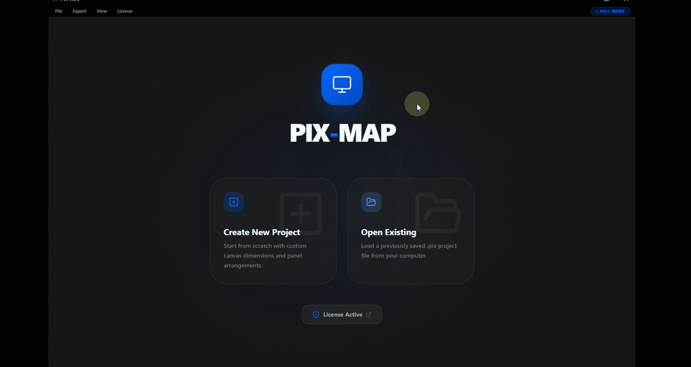
Create a Custom LED Panel Size
Not all LED installations use standard panel modules. When the hardware in use does not match a preset in the Panel Library, users can define a custom panel specification by entering the exact pixel width, pixel height, and pitch value that corresponds to the physical modules being installed.
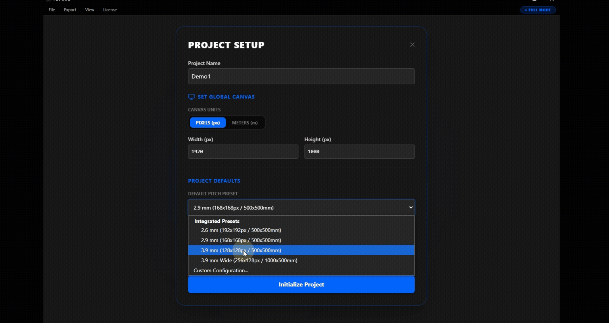
Upload a Brand Logo to the Canvas
Reference graphics, such as brand logos, sponsor artwork, or stage schematics, can be imported directly onto the canvas as visual guide layers. These images are not part of the pixel mapping output and are used purely as layout references during the design process.
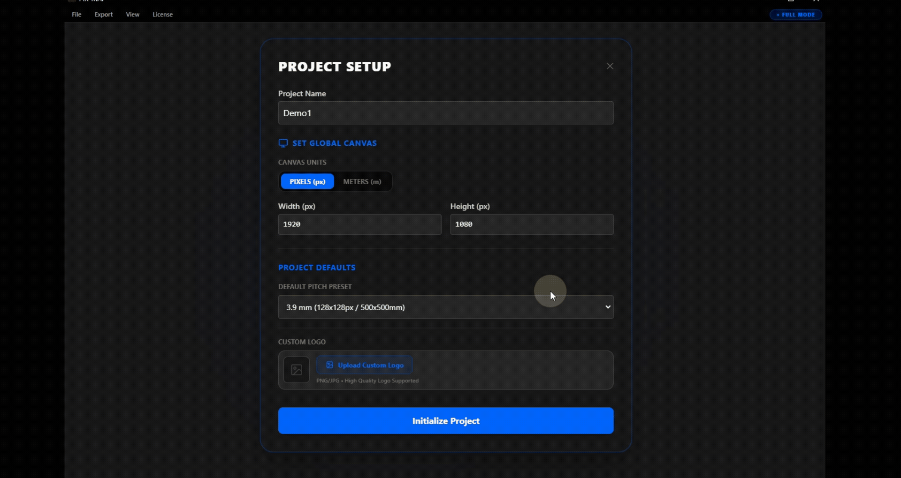
Add the First LED Surface
With the canvas initialized and any reference imagery in place, the first LED surface can be created. A surface is defined by specifying the number of panel rows and columns and selecting the panel type. PIXMAP immediately renders the surface on the canvas as a panel grid, providing a real-time visual representation of the LED array.
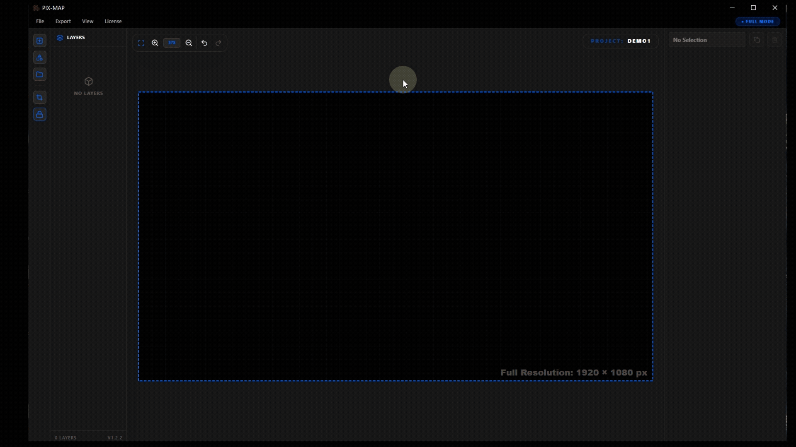
Add Multiple LED Surfaces
Most professional LED installations involve multiple independent display zones. A stage production might include a main center screen, left and right wing panels, floor tiles, and ceiling rigs, each representing a distinct LED surface with its own panel count and configuration. In PIXMAP, each zone is added as a separate surface on the canvas.
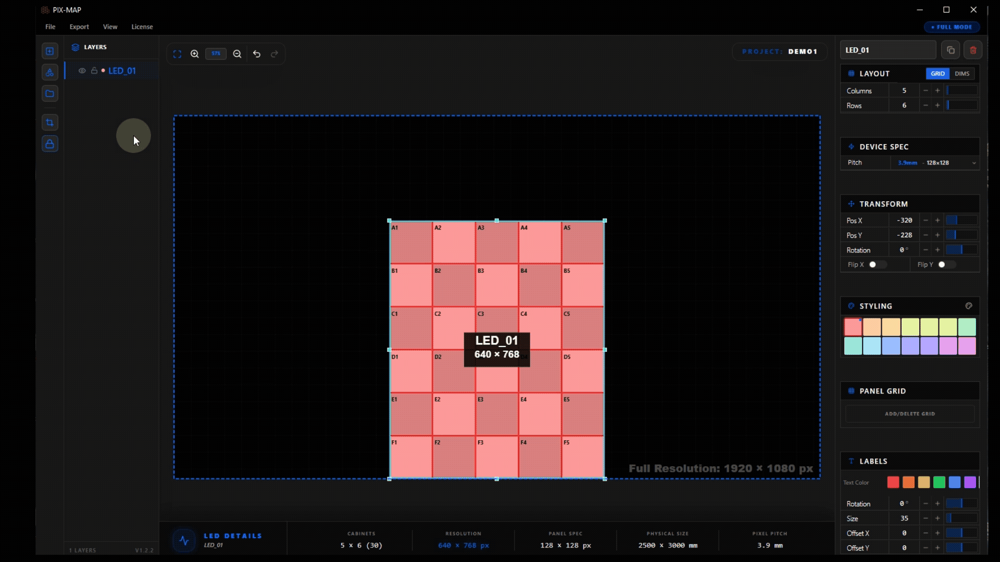
Name Each LED Surface
As surfaces accumulate in a project, clear and descriptive naming becomes critical for maintaining clarity in the layers panel and in the exported output. Each surface can be given a name that directly communicates its physical role in the installation, such as "Main Screen," "Stage Left Wing," "Floor Riser 1," or "Ceiling Truss."
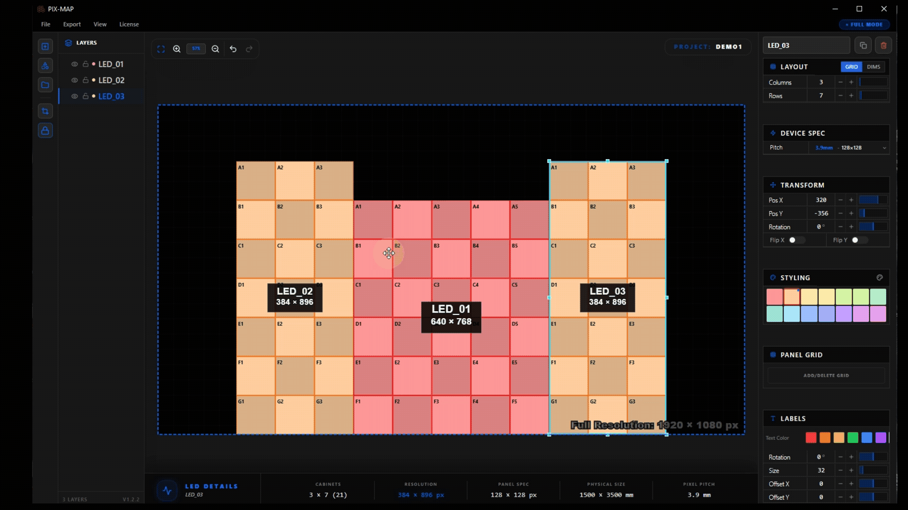
Use the One-Click Color Shifter
When multiple surfaces are placed close together on the canvas, distinguishing them visually becomes important for accurate editing. The One-Click Color Shifter instantly assigns a visually distinct color to each surface, cycling through a curated palette that avoids applying similar hues to adjacent surfaces.
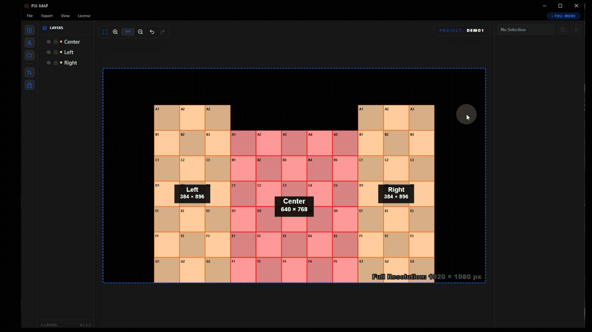
Edit Panel Grids
Real LED installations rarely occupy a perfect rectangular grid. Structural elements, rigging hardware, and installation constraints frequently require individual panels to be omitted. Panel grid editing allows users to remove specific cells from a surface grid, accurately representing physical gaps in an otherwise regular array.
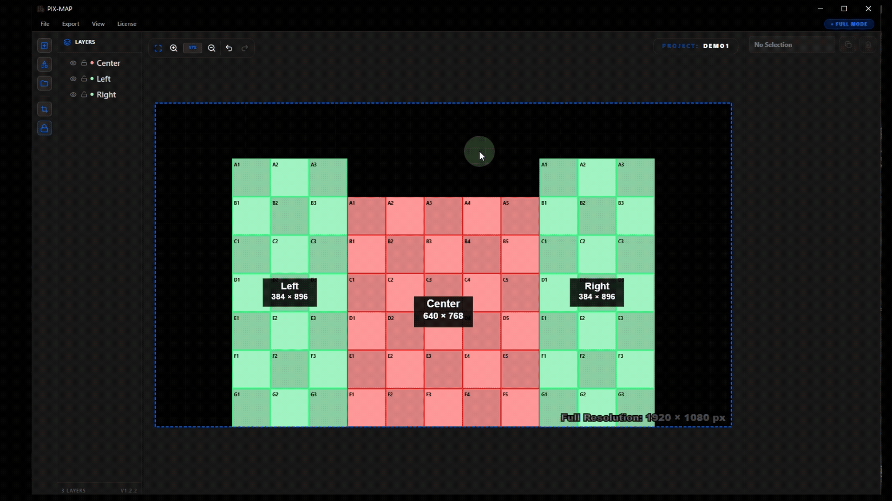
Customize Surface Labels
Surface labels are the text identifiers displayed on each surface in the canvas view. Label color and size can be adjusted independently per surface, ensuring labels remain readable against the surface fill color and that important surfaces are labeled more prominently than smaller adjacent ones.
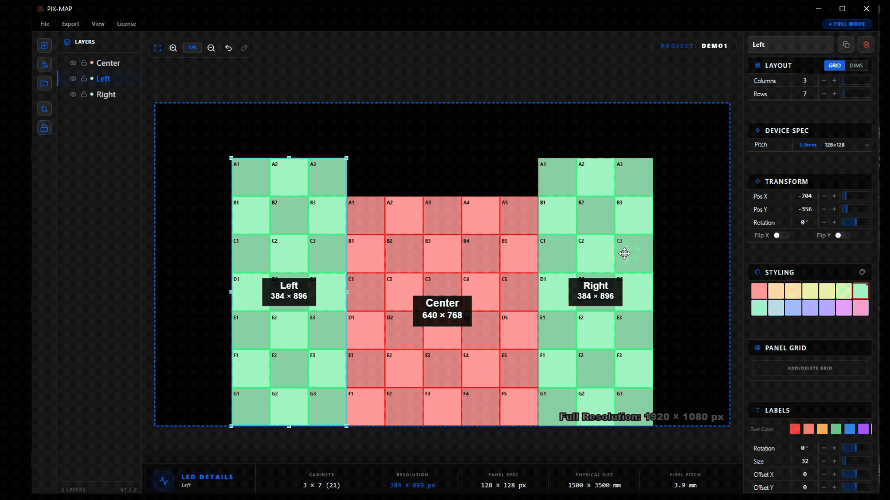
Fit Canvas to Content
As surfaces are added and repositioned, the canvas viewport can drift away from the content area. Fit Canvas to Content solves this with a single click, the viewport is automatically adjusted to frame all placed surfaces and objects within the visible window at an appropriate zoom level.
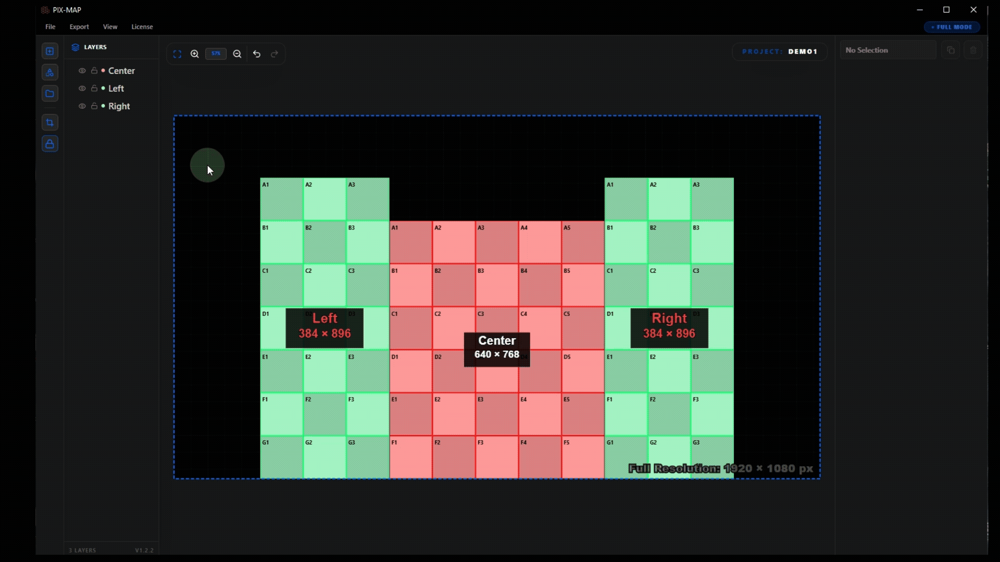
Apply Basic Shape Masks
Built-in geometric mask shapes can be applied directly on top of LED surfaces to define non-rectangular active display areas. The shape library includes rectangles, circles, triangles, and hexagons, covering the most common non-standard LED display forms in live production and event environments.
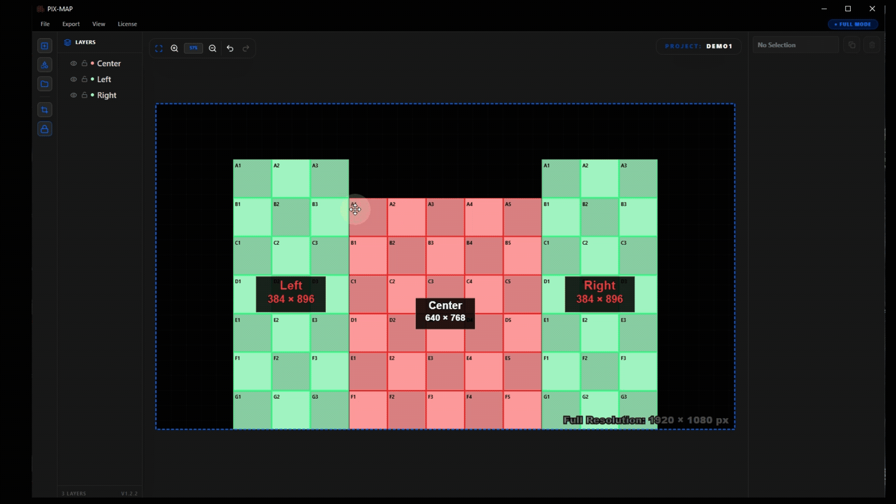
Create Custom Shape Masks
For LED configurations that do not match any preset geometric shape, the custom polygon tool allows users to draw any closed shape directly on the canvas. Anchor points are placed by clicking, and the shape is completed by connecting back to the first point. The resulting polygon is applied as a precision mask.
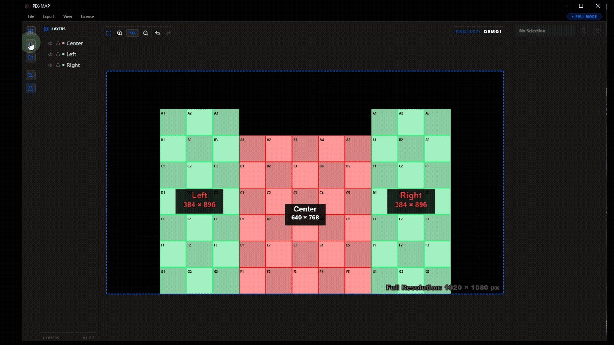
Import a PNG Mask
When a mask shape has been prepared externally, as part of a brand identity package, stage design asset, or graphic cutout, it can be imported directly as a PNG file. PIXMAP reads the alpha channel of the imported PNG to define the mask boundary, enabling highly complex shapes to be used without manual polygon drawing.
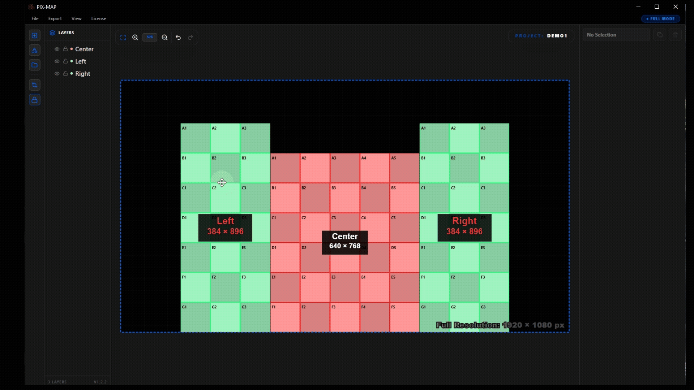
Export the Layout
When the layout is complete and all surfaces, masks, and configurations have been verified, the project is ready for export. PIXMAP supports three export modes that can be selected and downloaded simultaneously, giving technicians all required production files in a single operation.
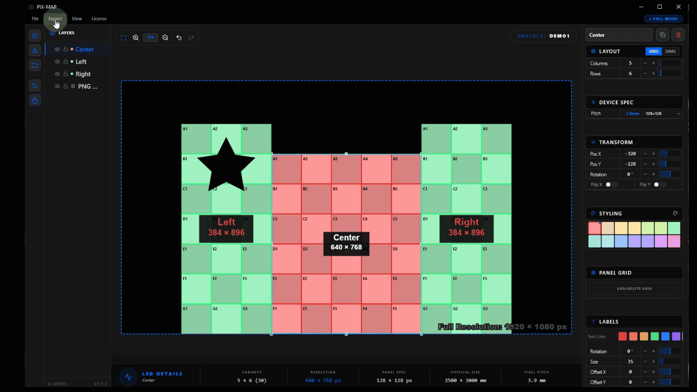
| Export Mode | Description |
|---|---|
Mask Only |
Exports the mask boundary geometry for each surface, defining the active pixel region without patch assignment. Use when mask data is required independently of patch information. |
Patch Only |
Exports the pixel patch data, the mapping of output pixels to physical LED locations and signal assignments. Use when mask data already exists and only patch information is needed. |
Mask with Patch |
A combined export containing both the mask boundary and the complete pixel patch data. This is the primary deliverable for most production workflows and the most complete format available. |
Advanced Output — Slicing for Video Processors
Advanced Output is where a finished pixel map becomes real, deliverable video-processor outputs. Once the physical LED layout has been designed on the canvas, Advanced Output lets you cut that layout into slices and arrange them onto one or more output screens — exactly the way a media server such as Resolume Arena maps a composition onto its outputs. Each slice defines which part of the content it takes (its input) and where that content is placed on the processor (its output).
The workflow mirrors the professional input / output model used across the industry: a single composition is sampled by many slices, and each slice is transformed independently onto the output canvas. This is what makes irregular walls, split screens, wings, floors and ceilings all driveable from standard rectangular processor outputs.

How It Works
Advanced Output sits between the design canvas and the physical hardware. The full designed canvas becomes the composition — the source picture. You then add one or more screens, where each screen represents a single video processor or output device with its own pixel resolution. Finally you cut the composition into slices, and each slice carries two rectangles: an input rectangle (the region of the composition it samples) and an output rectangle (its position, size and rotation on the screen).
| Concept | Description |
|---|---|
Composition | The complete designed canvas at its full resolution — the single source picture every slice samples from. |
Screen | One physical output / video processor, with its own resolution (for example 3840 × 2160). A project can contain several screens. |
Slice | A rectangular region that takes a piece of the composition and places it onto a screen. Slices are the unit of mapping. |
Input Rectangle | The area of the composition the slice reads from — set on the Input Selection tab. |
Output Rectangle | The destination on the screen — position, width, height and rotation — set on the Output Transformation tab. |
Screens & Processors
Screens are managed from the list on the left of the Advanced Output workspace. Each screen is treated as one processor output — add a screen for every physical processor in the rig, set its resolution, and assign slices to it. A default reference screen mirrors the composition so you always have a starting point; additional screens are created as needed for multi-processor installations.
Input Selection
The Input Selection tab defines what each slice takes from the composition. Here the composition is shown as the source picture, and each slice is a rectangle laid over it. Move and size that rectangle to choose the exact region of content the slice will carry to its output — identical in purpose to the Input rectangle in Resolume's Advanced Output.
Position the slice's input rectangle over the part of the composition it should display. This is the crop of the source content — the pixels the processor output will actually show.
| Input Property | Description |
|---|---|
Input Position | The X / Y coordinates of the slice's source rectangle within the composition. |
Input Size | The width × height of the region sampled from the composition. |
Layout Reference | The Input view represents the physical wall layout, so it is also the basis used later for power planning in LED Wiring. |
Output Transformation
The Output Transformation tab defines where each slice lands on the physical output. Switch to this tab to position, scale, rotate and flip every slice onto the selected screen's canvas. What you arrange here is exactly what the video processor sends to the LED wall — the same role as the Output rectangle in Resolume.
Place each slice on the output screen. Drag to position, resize with the handles, rotate to any angle, and flip to match the physical orientation of the panels. This is the final map the processor drives.
| Output Property | Description |
|---|---|
Output Position | The X / Y coordinates of the slice on the output screen canvas. |
Output Size | The width × height of the slice on the screen. Scaling here maps the sampled input onto the destination area. |
Rotation | Rotate the slice to any angle. Rotation is preserved through to LED Wiring and is baked into the exported Resolume geometry so the slice lands rotated in the media server too. |
Flip X / Flip Y | Mirror the slice horizontally or vertically to match the physical panel orientation. |
Slices & Splitting
Slices are created from the surfaces you designed on the canvas, and can be divided further to match how the content is distributed across processors and ports. A slice can be split into Left / Right or Top / Bottom halves, either automatically (an even 50 / 50 cut) or with a custom tile count on each side. Aspect-ratio lock keeps proportions correct while resizing.
| Slice Action | Description |
|---|---|
Split L / R · T / B | Divide a slice into two along a vertical or horizontal cut, following the panel grid. |
Half (Auto) / Custom | Split evenly down the middle, or specify exactly how many tiles go to each side. |
AR Lock | Maintain the slice's width / height ratio while resizing. |
Match Input → Output | Copy the input rectangle's shape onto the output rectangle (and vice-versa) to keep the two in sync. |
Resolume XML — Import & Export
Advanced Output speaks the same screen-setup format as Resolume Arena and Avenue. Export XML writes every slice — its input crop, output position, size and rotation — as a Resolume screen setup that can be loaded directly into the media server. Import XML brings an existing Resolume setup back into PIXMAP so an already-built show can be documented and wired.
Using Advanced Output — Step by Step
A typical Advanced Output pass follows the same order every time: design first, then slice, then arrange, then deliver.
- Open Advanced Output from a completed pixel-map project. The designed canvas becomes the composition.
- Add a screen for each physical video processor and set its output resolution.
- On Input Selection, position each slice's input rectangle over the region of the composition it should show.
- Switch to Output Transformation and place, scale, rotate and flip each slice onto the screen so it matches the real output.
- Split slices Left / Right or Top / Bottom where a wall spans multiple processor ports.
- Export — save a PNG map of the screen and/or Export XML into Resolume, then continue to LED Wiring for cabling and power.
Best Practices
The following recommendations reflect production-tested habits that improve accuracy, reduce rework, and produce reliable output files across a wide range of LED installations.
-
Name every surface with a clear, descriptive label Use names that communicate the physical role of the surface,"Main Screen," "Stage Left Wing," "Floor Riser 1." Generic names like "Surface 3" cause confusion during installation and when reviewing exported files with crew members.
-
Group related surfaces into named layer groups On installations with many surfaces, organize related zones into groups in the layers panel. Grouping all floor tiles, all wing panels, or all truss rigs together significantly speeds up navigation and reduces accidental edits.
-
Verify all panel configurations before exporting Before generating export files, review each surface in the layers panel and confirm that panel counts, pixel dimensions, and pitch values match the hardware specification. Errors at this level produce incorrect patch data that only becomes apparent during installation.
-
Run Fit Canvas to Content before every export Use this tool immediately before exporting. It confirms that all surfaces are within the visible canvas viewport and that nothing has accidentally drifted off-screen. This is a fast, reliable final check before committing to an export.
-
Apply distinct color coding to all surfaces Use the One-Click Color Shifter or manually assign distinct colors so that no two adjacent surfaces share a similar hue. Strong visual differentiation makes the canvas easier to read, faster to navigate, and clearer when used as a printed on-site reference.
-
Use reference imagery to guide surface placement When designing for a specific venue or stage, import a floor plan, logo, or architectural schematic as a canvas guide layer. Aligning surfaces to a real reference removes spatial guesswork and ensures the digital layout accurately reflects the physical space.
-
Download all export formats in a single operation Select Mask Only, Patch Only, and Mask with Patch simultaneously and export them all at once. Having every format available prevents the need to reopen and re-export the project if a different output type is requested later in the production process.